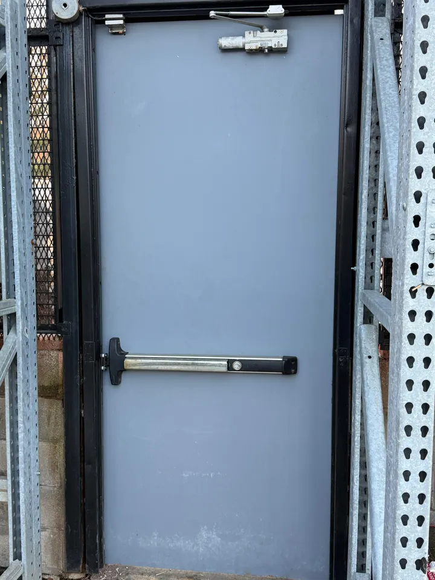

Broken display window after a break-in
A retail opening may need temporary protection, followed by measured glass replacement. Mention frame, lock and door damage when you call.
Previous client work
Explore glass entrances, door closers, exit hardware and locks from previous client work by Capital Glass and Door.
Damage to a storefront can affect the glass, frame and door hardware together. These are common entrance problems we handle.
A retail opening may need temporary protection, followed by measured glass replacement. Mention frame, lock and door damage when you call.
Glass above a doorway needs an assessment while people are kept clear of the affected area. Do not stand beneath unstable glazing to take a close-up photo.
A closer, pivot, latch or alignment problem may affect the entrance. Describe the symptom and whether the premises can be secured; avoid forcing the door.



Active hazard or broken glass right now? Call. Not urgent or want a quote? Send a photo on WhatsApp.
Keep people away from damaged glass. Take photos only from a safe position.
Call Capital Glass and Door at 202-643-4062, or send damage photos and your location on WhatsApp. Ask about availability, the repair scope and what happens next.